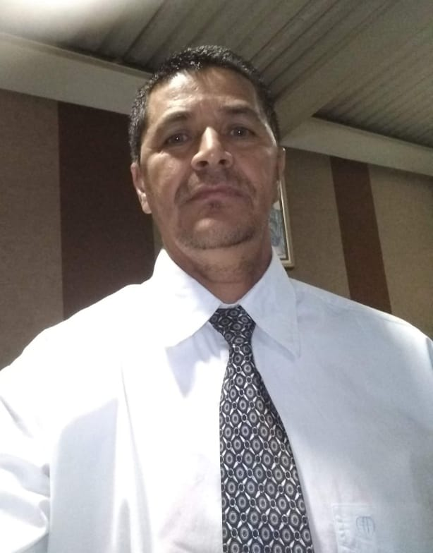

ROMÁRIO DUARTE
Romário Duarte é um experiente profissional a mais de 30 anos de atuação no transporte de passageiros. Com sua vasta experiência e habilidade, sempre demonstrou ser um condutor confiável e responsável ao longo de sua carreira. Sua dedicação ao ofício é refletida na maneira como mantém seu veículo sempre vistoriado e em ótimas condições, priorizando a segurança e o conforto dos passageiros.
ATENDIMENTO: ITAPOÃ, PLANALTO, VILA CLÓRIS (shopping estação), SÃO JOÃO BATISTA, CENÁCULO, LETÍCIA, MANTIQUEIRA e MARIA HELENA
Chamar no Whatsapp